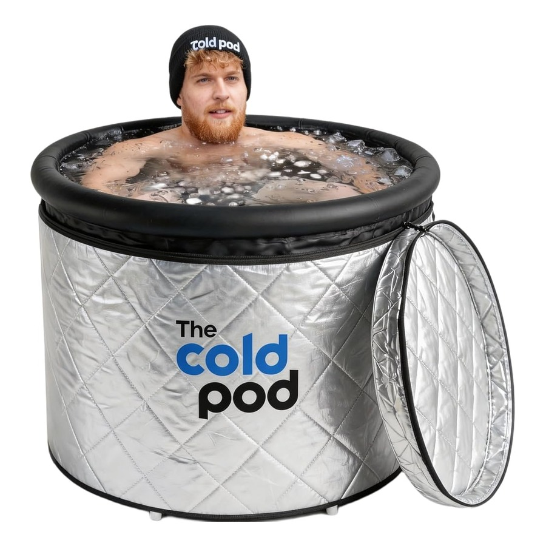
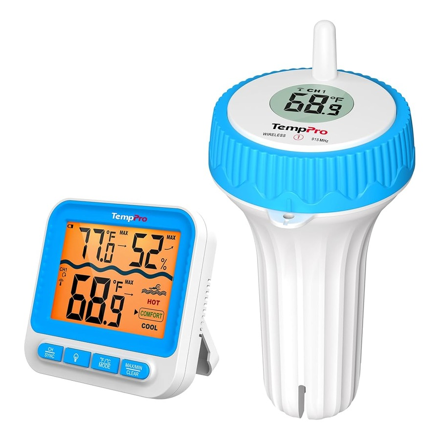
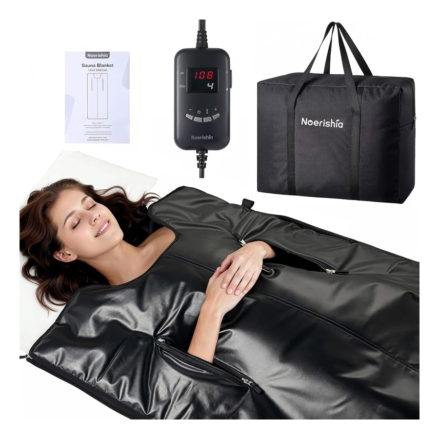

The Contrast & Red-Light Recovery Protocol for Hybrid Runners
How to sequence 11-minute weekly cold water immersion with 660nm/850nm near-infrared light wraps and far-infrared sauna blankets without blunting strength gains.
Endurance and hybrid athletes walk a tightrope between high weekly running mileage and heavy lower-body strength volume. Done at the right time, contrast therapy and red-light therapy let you stack back-to-back threshold days without joint breakdown.
1. Timing Cold Immersion Around Strength Sessions
To avoid blunting muscle protein synthesis immediately after heavy squats or sled work, schedule cold immersion at least 4 hours post-lift or on dedicated aerobic running days. The CryoPod 105-Gallon Insulated Portable Ice Bath Tub paired with the SubZero Floating Thermometer lets you lock in 50°F–55°F for 3-minute bouts right on your patio or balcony.
2. 660nm + 850nm Light Therapy for Patellar & Achilles Tendons
While surface cold calms acute inflammation, 850nm near-infrared wavelengths penetrate deep into tendons and joint capsules to support cellular recovery. Wrapping the InfraFlex 660nm + 850nm Therapy Belt around knees, ankles, or lower back for 15 minutes each evening restores tissue resilience before morning track intervals.
3. Heat Acclimation via Far-Infrared Sauna Blankets
Thirty minutes inside the ThermoCore Low-EMF Far-Infrared Sauna Blanket after training expands plasma volume and triggers heat-shock proteins—giving apartment athletes the cardiovascular benefits of a traditional sauna with zero remodeling.
Featured Gear in This Protocol

InfraFlex Red Light Therapy Belt 660nm 850nm Near-Infrared Recovery Wrap

CryoPod 105-Gallon Portable Ice Bath Tub Cold Plunge + Insulated Lid

SubZero IPX8 Floating Cold Plunge Thermometer & Wireless Display

ThermoCore Low-EMF Far-Infrared Portable Home Recovery Sauna Blanket
All 42 products ship free in 2–5 business days from US facilities with 30-day free returns.